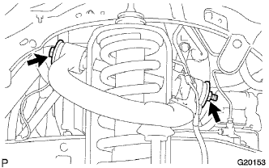
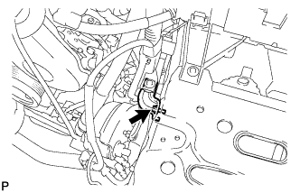
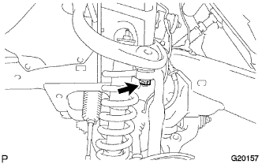

FRONT UPPER SUSPENSION ARM > INSTALLATION |
| 1. TEMPORARILY INSTALL FRONT SUSPENSION UPPER ARM ASSEMBLY LH |
|  |
Temporarily install the suspension upper arm and 2 washers with the bolt and nut.
|  |
Connect the bracket with the bolt.
|  |
Install a new nut and clip.
| 2. INSTALL SKID CONTROL SENSOR WIRE |
Connect the connector as follows.
for LH:
1. Attach the connector, and then connect the connector.
for RH:
1. Install the skid control sensor clamp with the bolt.
Install the 2 harness clamps with the 2 bolts.
Install the 2 harness clamps with the 2 bolts.
Attach the clip.
Connect the connector.
| 3. INSTALL FRONT WHEEL |
| 4. STABILIZE SUSPENSION |
Lower the vehicle.
Bounce the vehicle up and down several times to stabilize the suspension.
| 5. TIGHTEN FRONT SUSPENSION UPPER ARM ASSEMBLY LH |
Tighten the nut.
| 6. INSPECT AND ADJUST FRONT WHEEL ALIGNMENT |
Inspect and adjust the front wheel alignment (Click here).